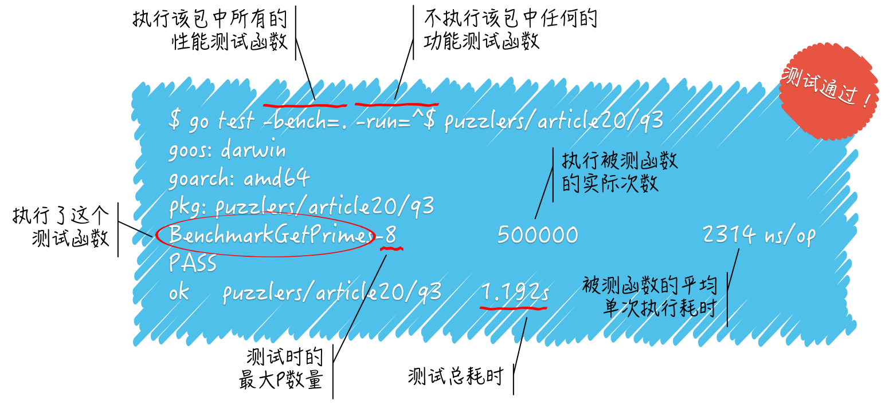

- 00 导读 写给0基础入门的Go语言学习者.md.html
- 00 导读 学习专栏的正确姿势.md.html
- 00 开篇词 跟着学，你也能成为Go语言高手.md.html
- 01 工作区和GOPATH.md.html
- 02 命令源码文件.md.html
- 03 库源码文件.md.html
- 04 程序实体的那些事儿（上）.md.html
- 05 程序实体的那些事儿（中）.md.html
- 06 程序实体的那些事儿 （下）.md.html
- 07 数组和切片.md.html
- 08 container包中的那些容器.md.html
- 09 字典的操作和约束.md.html
- 10 通道的基本操作.md.html
- 11 通道的高级玩法.md.html
- 12 使用函数的正确姿势.md.html
- 13 结构体及其方法的使用法门.md.html
- 14 接口类型的合理运用.md.html
- 15 关于指针的有限操作.md.html
- 16 go语句及其执行规则（上）.md.html
- 17 go语句及其执行规则（下）.md.html
- 18 if语句、for语句和switch语句.md.html
- 19 错误处理（上）.md.html
- 20 错误处理 （下）.md.html
- 21 panic函数、recover函数以及defer语句 （上）.md.html
- 22 panic函数、recover函数以及defer语句（下）.md.html
- 23 测试的基本规则和流程 （上）.md.html
- 24 测试的基本规则和流程（下）.md.html
- 25 更多的测试手法.md.html
- 26 sync.Mutex与sync.RWMutex.md.html
- 27 条件变量sync.Cond （上）.md.html
- 28 条件变量sync.Cond （下）.md.html
- 29 原子操作（上）.md.html
- 30 原子操作（下）.md.html
- 31 sync.WaitGroup和sync.Once.md.html
- 32 context.Context类型.md.html
- 33 临时对象池sync.Pool.md.html
- 34 并发安全字典sync.Map （上）.md.html
- 35 并发安全字典sync.Map (下).md.html
- 36 unicode与字符编码.md.html
- 37 strings包与字符串操作.md.html
- 38 bytes包与字节串操作（上）.md.html
- 39 bytes包与字节串操作（下）.md.html
- 40 io包中的接口和工具 （上）.md.html
- 41 io包中的接口和工具 （下）.md.html
- 42 bufio包中的数据类型 （上）.md.html
- 43 bufio包中的数据类型（下）.md.html
- 44 使用os包中的API （上）.md.html
- 45 使用os包中的API （下）.md.html
- 46 访问网络服务.md.html
- 47 基于HTTP协议的网络服务.md.html
- 48 程序性能分析基础（上）.md.html
- 49 程序性能分析基础（下）.md.html
- 尾声 愿你披荆斩棘，所向无敌.md.html
- 新年彩蛋 完整版思考题答案.md.html
- 捐赠
24 测试的基本规则和流程（下）
你好，我是郝林。今天我分享的主题是测试的基本规则和流程的（下）篇。
Go语言是一门很重视程序测试的编程语言，所以在上一篇中，我与你再三强调了程序测试的重要性，同时，也介绍了关于go test命令的基本规则和主要流程的内容。今天我们继续分享测试的基本规则和流程。本篇代码和指令较多，你可以点击文章查看原文。
知识扩展
问题 1：怎样解释功能测试的测试结果？
我们先来看下面的测试命令和结果：
$ go test puzzlers/article20/q2
ok puzzlers/article20/q2 0.008s
以$符号开头表明此行展现的是我输入的命令。在这里，我输入了go test puzzlers/article20/q2，这表示我想对导入路径为puzzlers/article20/q2的代码包进行测试。代码下面一行就是此次测试的简要结果。
这个简要结果有三块内容。最左边的ok表示此次测试成功，也就是说没有发现测试结果不如预期的情况。
当然了，这里全由我们编写的测试代码决定，我们总是认定测试代码本身没有Bug，并且忠诚地落实了我们的测试意图。在测试结果的中间，显示的是被测代码包的导入路径。
而在最右边，展现的是此次对该代码包的测试所耗费的时间，这里显示的0.008s，即8毫秒。不过，当我们紧接着第二次运行这个命令的时候，输出的测试结果会略有不同，如下所示：
$ go test puzzlers/article20/q2
ok puzzlers/article20/q2 (cached)
可以看到，结果最右边的不再是测试耗时，而是(cached)。这表明，由于测试代码与被测代码都没有任何变动，所以go test命令直接把之前缓存测试成功的结果打印出来了。
go命令通常会缓存程序构建的结果，以便在将来的构建中重用。我们可以通过运行go env GOCACHE命令来查看缓存目录的路径。缓存的数据总是能够正确地反映出当时的各种源码文件、构建环境、编译器选项等等的真实情况。
一旦有任何变动，缓存数据就会失效，go命令就会再次真正地执行操作。所以我们并不用担心打印出的缓存数据不是实时的结果。go命令会定期地删除最近未使用的缓存数据，但是，如果你想手动删除所有的缓存数据，运行一下go clean -cache命令就好了。
对于测试成功的结果，go命令也是会缓存的。运行go clean -testcache将会删除所有的测试结果缓存。不过，这样做肯定不会删除任何构建结果缓存。
此外，设置环境变量
GODEBUG的值也可以稍稍地改变go命令的缓存行为。比如，设置值为gocacheverify=1将会导致go命令绕过任何的缓存数据，而真正地执行操作并重新生成所有结果，然后再去检查新的结果与现有的缓存数据是否一致。
总之，我们并不用在意缓存数据的存在，因为它们肯定不会妨碍go test命令打印正确的测试结果。
你可能会问，如果测试失败，命令打印的结果将会是怎样的？如果功能测试函数的那个唯一参数被命名为t，那么当我们在其中调用t.Fail方法时，虽然当前的测试函数会继续执行下去，但是结果会显示该测试失败。如下所示：
$ go test puzzlers/article20/q2
--- FAIL: TestFail (0.00s)
demo53_test.go:49: Failed.
FAIL
FAIL puzzlers/article20/q2 0.007s
我们运行的命令与之前是相同的，但是我新增了一个功能测试函数TestFail，并在其中调用了t.Fail方法。测试结果显示，对被测代码包的测试，由于TestFail函数的测试失败而宣告失败。
注意，对于失败测试的结果，go test命令并不会进行缓存，所以，这种情况下的每次测试都会产生全新的结果。另外，如果测试失败了，那么go test命令将会导致：失败的测试函数中的常规测试日志一并被打印出来。
在这里的测试结果中，之所以显示了“demo53_test.go:49: Failed.”这一行，是因为我在TestFail函数中的调用表达式t.Fail()的下边编写了代码t.Log("Failed.")。
t.Log方法以及t.Logf方法的作用，就是打印常规的测试日志，只不过当测试成功的时候，go test命令就不会打印这类日志了。如果你想在测试结果中看到所有的常规测试日志，那么可以在运行go test命令的时候加入标记-v。
若我们想让某个测试函数在执行的过程中立即失败，则可以在该函数中调用
t.FailNow方法。我在下面把
TestFail函数中的t.Fail()改为t.FailNow()。与
t.Fail()不同，在t.FailNow()执行之后，当前函数会立即终止执行。换句话说，该行代码之后的所有代码都会失去执行机会。在这样修改之后，我再次运行上面的命令，得到的结果如下：
--- FAIL: TestFail (0.00s)
FAIL
FAIL puzzlers/article20/q2 0.008s
显然，之前显示在结果中的常规测试日志并没有出现在这里。
顺便说一下，如果你想在测试失败的同时打印失败测试日志，那么可以直接调用t.Error方法或者t.Errorf方法。
前者相当于t.Log方法和t.Fail方法的连续调用，而后者也与之类似，只不过它相当于先调用了t.Logf方法。
除此之外，还有t.Fatal方法和t.Fatalf方法，它们的作用是在打印失败错误日志之后立即终止当前测试函数的执行并宣告测试失败。更具体地说，这相当于它们在最后都调用了t.FailNow方法。
好了，到此为止，你是不是已经会解读功能测试的测试结果了呢？
问题 2：怎样解释性能测试的测试结果？
性能测试与功能测试的结果格式有很多相似的地方。我们在这里仅关注前者的特殊之处。请看下面的打印结果。
$ go test -bench=. -run=^$ puzzlers/article20/q3
goos: darwin
goarch: amd64
pkg: puzzlers/article20/q3
BenchmarkGetPrimes-8 500000 2314 ns/op
PASS
ok puzzlers/article20/q3 1.192s
我在运行go test命令的时候加了两个标记。第一个标记及其值为-bench=.，只有有了这个标记，命令才会进行性能测试。该标记的值.表明需要执行任意名称的性能测试函数，当然了，函数名称还是要符合Go程序测试的基本规则的。
第二个标记及其值是-run=^$，这个标记用于表明需要执行哪些功能测试函数，这同样也是以函数名称为依据的。该标记的值^$意味着：只执行名称为空的功能测试函数，换句话说，不执行任何功能测试函数。
你可能已经看出来了，这两个标记的值都是正则表达式。实际上，它们只能以正则表达式为值。此外，如果运行go test命令的时候不加-run标记，那么就会使它执行被测代码包中的所有功能测试函数。
再来看测试结果，重点说一下倒数第三行的内容。BenchmarkGetPrimes-8被称为单个性能测试的名称，它表示命令执行了性能测试函数BenchmarkGetPrimes，并且当时所用的最大P数量为8。
最大P数量相当于可以同时运行goroutine的逻辑CPU的最大个数。这里的逻辑CPU，也可以被称为CPU核心，但它并不等同于计算机中真正的CPU核心，只是Go语言运行时系统内部的一个概念，代表着它同时运行goroutine的能力。
顺便说一句，一台计算机的CPU核心的个数，意味着它能在同一时刻执行多少条程序指令，代表着它并行处理程序指令的能力。
我们可以通过调用 runtime.GOMAXPROCS函数改变最大P数量，也可以在运行go test命令时，加入标记-cpu来设置一个最大P数量的列表，以供命令在多次测试时使用。
至于怎样使用这个标记，以及go test命令执行的测试流程，会因此做出怎样的改变，我们在下一篇文章中再讨论。
在性能测试名称右边的是，go test命令最后一次执行性能测试函数（即BenchmarkGetPrimes函数）的时候，被测函数（即GetPrimes函数）被执行的实际次数。这是什么意思呢？
go test命令在执行性能测试函数的时候会给它一个正整数，若该测试函数的唯一参数的名称为b，则该正整数就由b.N代表。我们应该在测试函数中配合着编写代码，比如：
for i := 0; i < b.N; i++ {
GetPrimes(1000)
}
我在一个会迭代b.N次的循环中调用了GetPrimes函数，并给予它参数值1000。go test命令会先尝试把b.N设置为1，然后执行测试函数。
如果测试函数的执行时间没有超过上限，此上限默认为1秒，那么命令就会改大b.N的值，然后再次执行测试函数，如此往复，直到这个时间大于或等于上限为止。
当某次执行的时间大于或等于上限时，我们就说这是命令此次对该测试函数的最后一次执行。这时的b.N的值就会被包含在测试结果中，也就是上述测试结果中的500000。
我们可以简称该值为执行次数，但要注意，它指的是被测函数的执行次数，而不是性能测试函数的执行次数。
最后再看这个执行次数的右边，2314 ns/op表明单次执行GetPrimes函数的平均耗时为2314纳秒。这其实就是通过将最后一次执行测试函数时的执行时间，除以（被测函数的）执行次数而得出的。

（性能测试结果的基本解读）
以上这些，就是对默认情况下的性能测试结果的基本解读。你看明白了吗？
总结
注意，对于功能测试和性能测试，命令执行测试流程的方式会有些不同。另外一个重要的问题是，我们在与go test命令交互时，怎样解读它提供给我们的信息。只有解读正确，你才能知道测试的成功与否，失败的具体原因以及严重程度等等。
除此之外，对于性能测试，你还需要关注命令输出的计算资源使用提示，以及各种性能度量。
这两篇的文章中，我们一起学习了不少东西，但是其实还不够。我们只是探讨了go test命令以及testing包的基本使用方式。
在下一篇，我们还会讨论更高级的内容。这将涉及go test命令的各种标记、testing包的更多API，以及更复杂的测试结果。
思考题
在编写示例测试函数的时候，我们怎样指定预期的打印内容？
© 2019 - 2023 Liangliang Lee. Powered by gin and hexo-theme-book.